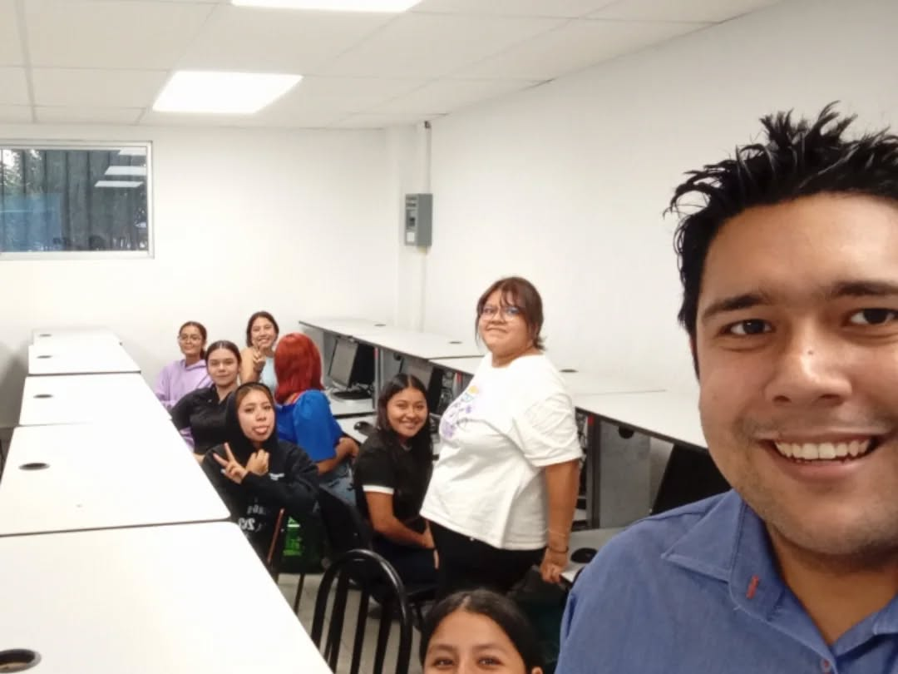

Conferencias Impartidas

Profesor en el Instituto Tecnológico de Ciudad Madero en el Departamento de Sistemas y Computación, con interés en investigación y proyectos.
Alejandro Estrada Padilla es un investigador y académico en el área de la computación. Nacido en Tampico, Tamaulipas, México, Alejandro ha dedicado su carrera a la optimización heurística de problemas complejos.
Completó su Doctorado en Ciencias en Computación en el Instituto Tecnológico de Tijuana en 2022, enfocándose en la incorporación de preferencias en problemas de optimización multicriterio. Previamente, obtuvo su Maestría en Ciencias de la Computación en el Instituto Tecnológico de Ciudad Madero, especializándose en la optimización de empacado de contenedores.
Además, posee una Licenciatura en Ingeniería Mecatrónica con un Diplomado en Manufactura y Calidad del Instituto de Estudios Superiores de Tamaulipas (IEST). Alejandro es autor de varios artículos indexados en JCR y capítulos de libros en editoriales de prestigio. Entre sus publicaciones se destaca "GRASP/Δ: An efficient algorithm for the multi-objective portfolio optimization problem", publicado en Expert Systems with Applications con un factor de impacto de 8.665.
Ha sido becario de CONACYT tanto en su maestría como en su doctorado. Alejandro imparte y desarrolla materias en la Maestría en Analítica de Negocios de la Anáhuac Online, en donde ha trabajado en materias como Estadística Inferencial y Ciencia de datos, y actualmente es profesor en la carrera de ingeniería en sistemas computacionales en el Instituto Tecnológico de Ciudad Madero, en donde imparte materias como Tecnologías para Big Data y Programación Lógica y Funcional.
Instituto Tecnológico de Tijuana
Tesis: Análisis de Modelos de NO-Inferioridad para incorporar Preferencias en Problemas de Optimización Multicriterio con Dependencias Temporales Imperfectamente Conocidas
Cédula profesional: 13315940
Becario CONACYT
Instituto Tecnológico de Ciudad Madero (ITCM)
Tesis: Optimización del Problema de Empacado de Contenedores con Costo y Tamaño Variable (VCSBPP)
Cédula profesional: 12503911
Becario CONACYT
Instituto de Estudios Superiores de Tamaulipas (IEST)
Diplomado en manufactura y calidad
Cédula profesional: 10205143
Centro de Bachillerato Tecnológico Industrial y de Servicios No. 103
Cédula profesional: 8519705
Curso impartido: Estadística Inferencial con Programación Matemática (Agosto - Septiembre 2024).
Materias desarrolladas (Marzo - Diciembre 2024):
Estadística Inferencial I y II, Investigación de Operaciones II, Ingeniería Económica, Temas Selectos de Productividad, Gestión Dinámica de la Innovación, Planeación y Diseño de Instalaciones, Tópicos de Ingeniería Industrial y Control Estadístico de Calidad.
Lenguajes y Autómatas II, Taller de Investigación II, Algoritmos y Programación, Tecnologías para Big Data, Programación Lógica y Funcional, Graficación y Tecnologías de Aplicaciones Web.
Periodo: Agosto 2022 - Diciembre 2025
Estoy abierto a colaboración con profesores investigadores y alumnos interesados en mis áreas de investigación.